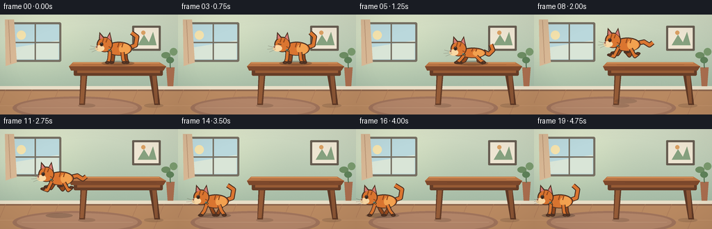
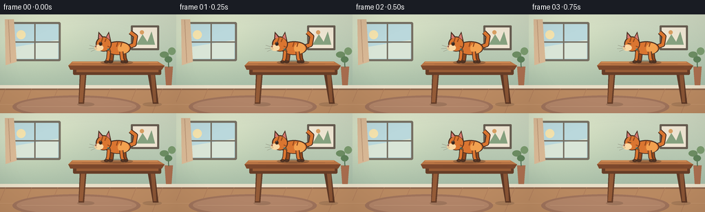

CODING AGENTS AS PIXEL WORLD MODELS
traex/GPT-5.6-Sol · dynamic_spatial_relationship_0011
点击播放 · 原生 RGB 像素
逐轮保存的候选
回放视频、检查图与代码变化。
每份候选均可单独播放。实际图片检查记录在下方工具轨迹中。
候选 01播放与检查图
点击播放 · 原生 RGB 像素


展开代码变化
--- 上一保存版本
+++ 本次保存版本
@@ -0,0 +1,247 @@
+from pathlib import Path
+import json, math
+import numpy as np
+from PIL import Image, ImageDraw, ImageFilter
+import artifact_io
+
+CASE_DIR = Path(__file__).resolve().parent
+SPEC = json.loads((CASE_DIR / 'task_spec.json').read_text())
+W, H, N = SPEC['width'], SPEC['height'], SPEC['frames']
+S = 4
+rng = np.random.default_rng(11)
+
+def sc(v): return int(round(v*S))
+def box(coords): return tuple(sc(v) for v in coords)
+def pts(seq): return [(sc(x),sc(y)) for x,y in seq]
+
+def line(d, xy, fill, width=1, joint='curve'):
+ d.line(pts(xy), fill=fill, width=max(1,sc(width)), joint=joint)
+
+def ellipse(d, xy, fill, outline=None, width=1):
+ d.ellipse(box(xy), fill=fill, outline=outline, width=max(1,sc(width)))
+
+def polygon(d, xy, fill): d.polygon(pts(xy), fill=fill)
+
+def rounded(d, xy, radius, fill, outline=None, width=1):
+ d.rounded_rectangle(box(xy), radius=sc(radius), fill=fill, outline=outline, width=max(1,sc(width)))
+
+def make_background():
+ h, w = H*S, W*S
+ yy, xx = np.mgrid[0:h,0:w]
+ # Sage-plaster wall with a warm, cinematic pool of window light.
+ top = np.array([207, 217, 194.], float)
+ bot = np.array([164, 186, 165.], float)
+ t = np.clip(yy/(106*S),0,1)[...,None]
+ arr = top*(1-t)+bot*t
+ glow = np.exp(-(((xx-47*S)/(79*S))**2 + ((yy-39*S)/(60*S))**2))[...,None]
+ arr += glow*np.array([18,16,9.])
+ noise = rng.normal(0, 0.9, (h,w,1))
+ arr = np.clip(arr+noise,0,255).astype(np.uint8)
+ im = Image.fromarray(arr, 'RGB')
+ d = ImageDraw.Draw(im)
+ # Window and distant sky
+ rounded(d, (13,11,88,68), 2.5, '#766f62')
+ rounded(d, (16,14,85,65), 1, '#b9d7d8')
+ # sky panes
+ polygon(d, [(17,15),(84,15),(84,37),(17,48)], '#bad8dc')
+ polygon(d, [(17,48),(84,37),(84,64),(17,64)], '#d9e5d7')
+ ellipse(d, (24,23,37,36), '#f5e3ad')
+ line(d, [(50.5,14),(50.5,65)], '#766f62', 2)
+ line(d, [(16,40),(85,40)], '#766f62', 2)
+ # soft curtain
+ polygon(d, [(7,7),(20,7),(24,69),(8,74)], '#d8b895')
+ line(d, [(12,8),(15,70)], '#b99575', 1)
+ # framed minimalist print
+ rounded(d, (190,16,231,52), 1.2, '#665c50')
+ rounded(d, (193,19,228,49), .5, '#eee5d2')
+ polygon(d, [(198,44),(207,29),(214,40),(220,25),(225,44)], '#86a17f')
+ ellipse(d, (203,23,209,29), '#d99f63')
+ # baseboard and floor
+ d.rectangle(box((0,103,256,108)), fill='#e8dec7')
+ d.rectangle(box((0,108,256,144)), fill='#b98961')
+ d.rectangle(box((0,108,256,110)), fill='#8c654c')
+ for x in range(-30,290,38):
+ line(d, [(x,108),(x-15,144)], '#aa7958', .65)
+ line(d, [(0,131),(256,131)], '#c69770', .55)
+ # rug, kept low contrast so cat silhouette stays clean
+ ellipse(d, (18,118,204,151), '#9f735b')
+ ellipse(d, (24,121,198,147), '#b18468')
+ line(d, [(31,134),(191,134)], '#c39a7a', .55)
+ # potted plant on far right
+ polygon(d, [(239,76),(251,76),(249,103),(241,103)], '#a86d4e')
+ line(d, [(245,77),(244,57)], '#526f52', 1.5)
+ ellipse(d, (232,54,245,63), '#6c8c62')
+ ellipse(d, (244,48,255,59), '#79996d')
+ ellipse(d, (239,61,250,70), '#5d8058')
+ return im
+
+BG = make_background()
+
+def draw_table(im):
+ d = ImageDraw.Draw(im, 'RGBA')
+ # contact shadows from table feet
+ ellipse(d, (112,128,137,134), (65,45,35,45))
+ ellipse(d, (207,128,235,134), (65,45,35,45))
+ # tapered legs, farther pair first
+ polygon(d, [(213,78),(224,78),(230,130),(222,130)], (93,56,37,255))
+ polygon(d, [(116,78),(126,78),(122,130),(114,130)], (100,61,40,255))
+ polygon(d, [(218,80),(224,80),(227,128),(223,128)], (137,84,52,255))
+ polygon(d, [(118,80),(124,80),(120,128),(115,128)], (148,91,55,255))
+ # apron
+ rounded(d, (106,76,234,88), 2, (102,61,39,255))
+ d.rectangle(box((111,78,230,84)), fill=(151,91,53,255))
+ # top: pale highlight defines support surface at y=71
+ polygon(d, [(105,68.5),(229,68.5),(239,74.5),(99,74.5)], (184,116,68,255))
+ polygon(d, [(99,74.5),(239,74.5),(235,80.5),(102,80.5)], (125,72,44,255))
+ line(d, [(105,69.5),(229,69.5)], (231,166,105,210), 1)
+ # wood grain
+ line(d, [(119,72),(216,72)], (125,72,44,100), .55)
+ line(d, [(131,77),(225,77)], (84,48,34,90), .5)
+
+def draw_shadow(im, cx, surface, airborne, speed):
+ d = ImageDraw.Draw(im, 'RGBA')
+ # shadow falls on the relevant supporting plane; becomes smaller/fainter in air
+ if surface == 'table':
+ ellipse(d, (cx-23,66.5,cx+24,73.5), (43,31,25,72))
+ else:
+ spread = 24 - 8*airborne
+ alpha = int(72 - 30*airborne)
+ ellipse(d, (cx-spread,121,cx+spread,128), (48,39,33,alpha))
+
+def cat_geometry(frame):
+ # center x and paw baseline. Deliberate holds at both start and destination.
+ xs = [169,169,169,168.5,168,166,158,146,132,117,101,85,72,61,52,44,38,35,35,35]
+ ys = [69,69,69,69,69,69,65,61,61,66,76,89,105,122,124,124,124,124,124,124]
+ phases = ['stand']*5 + ['crouch','launch','air','air','air','air','air','land','run','run','run','run','brake','stand','stand']
+ return xs[frame], ys[frame], phases[frame]
+
+def draw_cat(im, cx, base, phase, frame):
+ d = ImageDraw.Draw(im, 'RGBA')
+ outline=(75,48,34,255); dark=(147,72,29,255); orange=(218,117,48,255)
+ light=(242,161,79,255); cream=(250,216,164,255); pink=(214,120,112,255)
+ # posture values: cat faces left throughout
+ crouch = phase in ('crouch','land','brake')
+ air = phase in ('launch','air')
+ run = phase == 'run'
+ body_y = base - (14 if crouch else 20)
+ if air: body_y = base - 18
+ body_h = 15 if crouch else 20
+ # tail behind: expressive but attached at right rump
+ tail_root=(cx+17, body_y-2)
+ if air:
+ tail_pts=[tail_root,(cx+26,body_y-4),(cx+34,body_y+1),(cx+39,body_y-3)]
+ elif crouch:
+ tail_pts=[tail_root,(cx+25,body_y+2),(cx+31,body_y-4),(cx+28,body_y-12)]
+ else:
+ wag=2*math.sin(frame*.7)
+ tail_pts=[tail_root,(cx+26,body_y-5),(cx+28,body_y-17),(cx+20+wag,body_y-23)]
+ line(d, tail_pts, outline, 7)
+ line(d, tail_pts, orange, 4.4)
+ # legs behind body: jointed, frame-specific gait
+ hips=[cx-6,cx+11]
+ if air:
+ legs=[((hips[0],body_y+5),(cx-12,base-4),(cx-18,base-6)),
+ ((hips[1],body_y+5),(cx+5,base-2),(cx+1,base-7))]
+ elif run:
+ q = (frame-13)%4
+ patterns=[(-8,9),(7,-7),(-7,8),(8,-8)]
+ a,b=patterns[q]
+ legs=[((hips[0],body_y+5),(hips[0]+a*.45,base-7),(hips[0]+a,base)),
+ ((hips[1],body_y+5),(hips[1]+b*.45,base-7),(hips[1]+b,base))]
+ elif crouch:
+ legs=[((hips[0],body_y+4),(cx-10,base-3),(cx-16,base)),
+ ((hips[1],body_y+4),(cx+10,base-3),(cx+17,base))]
+ else:
+ legs=[((hips[0],body_y+5),(hips[0]-1,base-5),(hips[0]-2,base)),
+ ((hips[1],body_y+5),(hips[1]+1,base-5),(hips[1]+3,base))]
+ for leg in legs:
+ line(d, leg, outline, 6)
+ line(d, leg, dark, 3.7)
+ ellipse(d,(leg[-1][0]-4,leg[-1][1]-2,leg[-1][0]+3,leg[-1][1]+2),dark,outline,sc(0.5))
+ # torso
+ ellipse(d, (cx-17,body_y-body_h/2,cx+21,body_y+body_h/2), outline)
+ ellipse(d, (cx-15.5,body_y-body_h/2+1.5,cx+19.5,body_y+body_h/2-1), orange)
+ # subtle warm flank / tabby marks
+ ellipse(d, (cx+2,body_y-body_h/2+3,cx+18,body_y+body_h/2-2), light)
+ for ox in (2,8):
+ line(d, [(cx+ox,body_y-body_h/2+1),(cx+ox-2,body_y-2)], dark, 1.4)
+ # near legs over body edge for dimensional clarity
+ if air:
+ near=[((cx-11,body_y+5),(cx-17,base-1),(cx-23,base-3)),
+ ((cx+7,body_y+6),(cx+13,base-1),(cx+18,base-5))]
+ elif run:
+ q=(frame-13)%4; ext=[(9,-8),(-8,8),(8,-7),(-7,9)][q]
+ near=[((cx-11,body_y+5),(cx-11+ext[0]*.45,base-6),(cx-11+ext[0],base)),
+ ((cx+7,body_y+5),(cx+7+ext[1]*.45,base-6),(cx+7+ext[1],base))]
+ elif crouch:
+ near=[((cx-11,body_y+4),(cx-16,base-4),(cx-21,base)),
+ ((cx+7,body_y+5),(cx+13,base-3),(cx+18,base))]
+ else:
+ near=[((cx-11,body_y+4),(cx-12,base-5),(cx-14,base)),
+ ((cx+7,body_y+5),(cx+8,base-5),(cx+10,base))]
+ for leg in near:
+ line(d, leg, outline, 6)
+ line(d, leg, orange, 3.7)
+ ellipse(d,(leg[-1][0]-4,leg[-1][1]-2,leg[-1][0]+3,leg[-1][1]+2),orange,outline,sc(0.5))
+ # neck and head (left-facing profile)
+ hx, hy = cx-18, body_y-6
+ ellipse(d, (hx-12,hy-11,hx+11,hy+11), outline)
+ # ears first, then face fill unifies seams
+ polygon(d, [(hx-9,hy-6),(hx-8,hy-18),(hx-1,hy-10)], outline)
+ polygon(d, [(hx+2,hy-9),(hx+7,hy-18),(hx+10,hy-5)], outline)
+ polygon(d, [(hx-7.5,hy-8),(hx-7,hy-15),(hx-2.5,hy-9)], pink)
+ polygon(d, [(hx+3.5,hy-10),(hx+6.8,hy-15),(hx+8.5,hy-6)], pink)
+ ellipse(d, (hx-10.5,hy-9.5,hx+9.5,hy+10), orange)
+ # cheek/muzzle projects left, making heading unambiguous
+ ellipse(d, (hx-14,hy+1,hx-1,hy+10), cream)
+ # brow stripe and cheek stripe
+ line(d, [(hx-2,hy-9),(hx-4,hy-3)], dark, 1.5)
+ line(d, [(hx+3,hy-8),(hx+1,hy-3)], dark, 1.4)
+ line(d, [(hx+5,hy+3),(hx+9,hy+5)], dark, 1.2)
+ # blink once while waiting; wide eye during jump/run
+ blink = frame==3
+ if blink:
+ line(d, [(hx-7,hy-1),(hx-2,hy)], '#3b332b', 1.2)
+ else:
+ ellipse(d, (hx-7.5,hy-3,hx-2.5,hy+2.5), '#f1d66e', outline, sc(.55))
+ ellipse(d, (hx-5.6,hy-2.4,hx-4.3,hy+2), '#25221e')
+ ellipse(d, (hx-5.6,hy-2.2,hx-5,hy-1.5), '#ffffff')
+ polygon(d, [(hx-13.5,hy+3),(hx-10.5,hy+2),(hx-11.7,hy+5)], '#8e514a')
+ # whiskers
+ line(d, [(hx-11,hy+5),(hx-21,hy+2)], (77,64,53,190), .55)
+ line(d, [(hx-11,hy+6),(hx-22,hy+7)], (77,64,53,190), .55)
+ line(d, [(hx-10,hy+7),(hx-19,hy+11)], (77,64,53,170), .55)
+ # collar gives stable visual identity
+ line(d, [(hx+5,hy+7),(hx+9,hy+9)], '#4a817f', 2)
+ ellipse(d, (hx+6.5,hy+7.5,hx+9.5,hy+10.5), '#e9c95b', outline, sc(.35))
+
+frames=[]
+for f in range(N):
+ im=BG.copy()
+ draw_table(im)
+ cx,base,phase=cat_geometry(f)
+ # shadows: table before takeoff; floor afterwards, with height-dependent softness
+ if f <= 5:
+ draw_shadow(im,cx,'table',0,0)
+ else:
+ height=max(0,124-base)
+ airborne=min(1,height/63)
+ draw_shadow(im,cx,'floor',airborne,1)
+ # very restrained motion streaks during fastest travel
+ if 8 <= f <= 12:
+ dd=ImageDraw.Draw(im,'RGBA')
+ line(dd, [(cx+23,base-23),(cx+34,base-23)], (245,229,194,60), 1)
+ line(dd, [(cx+19,base-15),(cx+28,base-15)], (245,229,194,40), .7)
+ draw_cat(im,cx,base,phase,f)
+ # one consistent, gentle vignette
+ arr=np.asarray(im).astype(np.float32)
+ yy,xx=np.mgrid[0:H*S,0:W*S]
+ rr=((xx-W*S/2)/(W*S*.72))**2+((yy-H*S/2)/(H*S*.72))**2
+ factor=np.clip(1-0.10*np.maximum(rr-.32,0),.87,1)[...,None]
+ arr=np.clip(arr*factor,0,255).astype(np.uint8)
+ im=Image.fromarray(arr).resize((W,H),Image.Resampling.LANCZOS)
+ frames.append(np.asarray(im,dtype=np.uint8))
+
+frames=np.stack(frames)
+artifact_io.save(frames, CASE_DIR)
+print(f'saved {frames.shape} RGB frames to {CASE_DIR}')
可观测工具轨迹
实际执行的命令与返回图片。
命令 1exit 0
/bin/bash -lc "cat prompt.txt && printf '\\n--- GENERATION_RULES ---\\n' && cat GENERATION_RULES.md"
命令 2exit 0
/bin/bash -lc "cat task_spec.json && printf '\\n--- FILES ---\\n' && find . -maxdepth 2 -type f -printf '%p %s bytes\\n' | sort"
命令 3exit 0
/bin/bash -lc 'cat artifact_io.py'
命令 4exit 0
/bin/bash -lc "cat > generate.py <<'PY'
from pathlib import Path
import json, math
import numpy as np
from PIL import Image, ImageDraw, ImageFilter
import artifact_io
CASE_DIR = Path(__file__).resolve().parent
SPEC = json.loads((CASE_DIR / 'task_spec.json').read_text())
W, H, N = SPEC['width'], SPEC['height'], SPEC['frames']
S = 4
rng = np.random.default_rng(11)
def sc(v): return int(round(v*S))
def box(coords): return tuple(sc(v) for v in coords)
def pts(seq): return [(sc(x),sc(y)) for x,y in seq]
def line(d, xy, fill, width=1, joint='curve'):
d.line(pts(xy), fill=fill, width=max(1,sc(width)), joint=joint)
def ellipse(d, xy, fill, outline=None, width=1):
d.ellipse(box(xy), fill=fill, outline=outline, width=max(1,sc(width)))
def polygon(d, xy, fill): d.polygon(pts(xy), fill=fill)
def rounded(d, xy, radius, fill, outline=None, width=1):
d.rounded_rectangle(box(xy), radius=sc(radius), fill=fill, outline=outline, width=max(1,sc(width)))
def make_background():
h, w = H*S, W*S
yy, xx = np.mgrid[0:h,0:w]
# Sage-plaster wall with a warm, cinematic pool of window light.
top = np.array([207, 217, 194.], float)
bot = np.array([164, 186, 165.], float)
t = np.clip(yy/(106*S),0,1)[...,None]
arr = top*(1-t)+bot*t
glow = np.exp(-(((xx-47*S)/(79*S))**2 + ((yy-39*S)/(60*S))**2))[...,None]
arr += glow*np.array([18,16,9.])
noise = rng.normal(0, 0.9, (h,w,1))
arr = np.clip(arr+noise,0,255).astype(np.uint8)
im = Image.fromarray(arr, 'RGB')
d = ImageDraw.Draw(im)
# Window and distant sky
rounded(d, (13,11,88,68), 2.5, '#766f62')
rounded(d, (16,14,85,65), 1, '#b9d7d8')
# sky panes
polygon(d, [(17,15),(84,15),(84,37),(17,48)], '#bad8dc')
polygon(d, [(17,48),(84,37),(84,64),(17,64)], '#d9e5d7')
ellipse(d, (24,23,37,36), '#f5e3ad')
line(d, [(50.5,14),(50.5,65)], '#766f62', 2)
line(d, [(16,40),(85,40)], '#766f62', 2)
# soft curtain
polygon(d, [(7,7),(20,7),(24,69),(8,74)], '#d8b895')
line(d, [(12,8),(15,70)], '#b99575', 1)
# framed minimalist print
rounded(d, (190,16,231,52), 1.2, '#665c50')
rounded(d, (193,19,228,49), .5, '#eee5d2')
polygon(d, [(198,44),(207,29),(214,40),(220,25),(225,44)], '#86a17f')
ellipse(d, (203,23,209,29), '#d99f63')
# baseboard and floor
d.rectangle(box((0,103,256,108)), fill='#e8dec7')
d.rectangle(box((0,108,256,144)), fill='#b98961')
d.rectangle(box((0,108,256,110)), fill='#8c654c')
for x in range(-30,290,38):
line(d, [(x,108),(x-15,144)], '#aa7958', .65)
line(d, [(0,131),(256,131)], '#c69770', .55)
# rug, kept low contrast so cat silhouette stays clean
ellipse(d, (18,118,204,151), '#9f735b')
ellipse(d, (24,121,198,147), '#b18468')
line(d, [(31,134),(191,134)], '#c39a7a', .55)
# potted plant on far right
polygon(d, [(239,76),(251,76),(249,103),(241,103)], '#a86d4e')
line(d, [(245,77),(244,57)], '#526f52', 1.5)
ellipse(d, (232,54,245,63), '#6c8c62')
ellipse(d, (244,48,255,59), '#79996d')
ellipse(d, (239,61,250,70), '#5d8058')
return im
BG = make_background()
def draw_table(im):
d = ImageDraw.Draw(im, 'RGBA')
# contact shadows from table feet
ellipse(d, (112,128,137,134), (65,45,35,45))
ellipse(d, (207,128,235,134), (65,45,35,45))
# tapered legs, farther pair first
polygon(d, [(213,78),(224,78),(230,130),(222,130)], (93,56,37,255))
polygon(d, [(116,78),(126,78),(122,130),(114,130)], (100,61,40,255))
polygon(d, [(218,80),(224,80),(227,128),(223,128)], (137,84,52,255))
polygon(d, [(118,80),(124,80),(120,128),(115,128)], (148,91,55,255))
# apron
rounded(d, (106,76,234,88), 2, (102,61,39,255))
d.rectangle(box((111,78,230,84)), fill=(151,91,53,255))
# top: pale highlight defines support surface at y=71
polygon(d, [(105,68.5),(229,68.5),(239,74.5),(99,74.5)], (184,116,68,255))
polygon(d, [(99,74.5),(239,74.5),(235,80.5),(102,80.5)], (125,72,44,255))
line(d, [(105,69.5),(229,69.5)], (231,166,105,210), 1)
# wood grain
line(d, [(119,72),(216,72)], (125,72,44,100), .55)
line(d, [(131,77),(225,77)], (84,48,34,90), .5)
def draw_shadow(im, cx, surface, airborne, speed):
d = ImageDraw.Draw(im, 'RGBA')
# shadow falls on the relevant supporting plane; becomes smaller/fainter in air
if surface == 'table':
ellipse(d, (cx-23,66.5,cx+24,73.5), (43,31,25,72))
else:
spread = 24 - 8*airborne
alpha = int(72 - 30*airborne)
ellipse(d, (cx-spread,121,cx+spread,128), (48,39,33,alpha))
def cat_geometry(frame):
# center x and paw baseline. Deliberate holds at both start and destination.
xs = [169,169,169,168.5,168,166,158,146,132,117,101,85,72,61,52,44,38,35,35,35]
ys = [69,69,69,69,69,69,65,61,61,66,76,89,105,122,124,124,124,124,124,124]
phases = ['stand']*5 + ['crouch','launch','air','air','air','air','air','land','run','run','run','run','brake','stand','stand']
return xs[frame], ys[frame], phases[frame]
def draw_cat(im, cx, base, phase, frame):
d = ImageDraw.Draw(im, 'RGBA')
outline=(75,48,34,255); dark=(147,72,29,255); orange=(218,117,48,255)
light=(242,161,79,255); cream=(250,216,164,255); pink=(214,120,112,255)
# posture values: cat faces left throughout
crouch = phase in ('crouch','land','brake')
air = phase in ('launch','air')
run = phase == 'run'
body_y = base - (14 if crouch else 20)
if air: body_y = base - 18
body_h = 15 if crouch else 20
# tail behind: expressive but attached at right rump
tail_root=(cx+17, body_y-2)
if air:
tail_pts=[tail_root,(cx+26,body_y-4),(cx+34,body_y+1),(cx+39,body_y-3)]
elif crouch:
tail_pts=[tail_root,(cx+25,body_y+2),(cx+31,body_y-4),(cx+28,body_y-12)]
else:
wag=2*math.sin(frame*.7)
tail_pts=[tail_root,(cx+26,body_y-5),(cx+28,body_y-17),(cx+20+wag,body_y-23)]
line(d, tail_pts, outline, 7)
line(d, tail_pts, orange, 4.4)
# legs behind body: jointed, frame-specific gait
hips=[cx-6,cx+11]
if air:
legs=[((hips[0],body_y+5),(cx-12,base-4),(cx-18,base-6)),
((hips[1],body_y+5),(cx+5,base-2),(cx+1,base-7))]
elif run:
q = (frame-13)%4
patterns=[(-8,9),(7,-7),(-7,8),(8,-8)]
a,b=patterns[q]
legs=[((hips[0],body_y+5),(hips[0]+a*.45,base-7),(hips[0]+a,base)),
((hips[1],body_y+5),(hips[1]+b*.45,base-7),(hips[1]+b,base))]
elif crouch:
legs=[((hips[0],body_y+4),(cx-10,base-3),(cx-16,base)),
((hips[1],body_y+4),(cx+10,base-3),(cx+17,base))]
else:
legs=[((hips[0],body_y+5),(hips[0]-1,base-5),(hips[0]-2,base)),
((hips[1],body_y+5),(hips[1]+1,base-5),(hips[1]+3,base))]
for leg in legs:
line(d, leg, outline, 6)
line(d, leg, dark, 3.7)
ellipse(d,(leg[-1][0]-4,leg[-1][1]-2,leg[-1][0]+3,leg[-1][1]+2),dark,outline,sc(0.5))
# torso
ellipse(d, (cx-17,body_y-body_h/2,cx+21,body_y+body_h/2), outline)
ellipse(d, (cx-15.5,body_y-body_h/2+1.5,cx+19.5,body_y+body_h/2-1), orange)
# subtle warm flank / tabby marks
ellipse(d, (cx+2,body_y-body_h/2+3,cx+18,body_y+body_h/2-2), light)
for ox in (2,8):
line(d, [(cx+ox,body_y-body_h/2+1),(cx+ox-2,body_y-2)], dark, 1.4)
# near legs over body edge for dimensional clarity
if air:
near=[((cx-11,body_y+5),(cx-17,base-1),(cx-23,base-3)),
((cx+7,body_y+6),(cx+13,base-1),(cx+18,base-5))]
elif run:
q=(frame-13)%4; ext=[(9,-8),(-8,8),(8,-7),(-7,9)][q]
near=[((cx-11,body_y+5),(cx-11+ext[0]*.45,base-6),(cx-11+ext[0],base)),
((cx+7,body_y+5),(cx+7+ext[1]*.45,base-6),(cx+7+ext[1],base))]
elif crouch:
near=[((cx-11,body_y+4),(cx-16,base-4),(cx-21,base)),
((cx+7,body_y+5),(cx+13,base-3),(cx+18,base))]
else:
near=[((cx-11,body_y+4),(cx-12,base-5),(cx-14,base)),
((cx+7,body_y+5),(cx+8,base-5),(cx+10,base))]
for leg in near:
line(d, leg, outline, 6)
line(d, leg, orange, 3.7)
ellipse(d,(leg[-1][0]-4,leg[-1][1]-2,leg[-1][0]+3,leg[-1][1]+2),orange,outline,sc(0.5))
# neck and head (left-facing profile)
hx, hy = cx-18, body_y-6
ellipse(d, (hx-12,hy-11,hx+11,hy+11), outline)
# ears first, then face fill unifies seams
polygon(d, [(hx-9,hy-6),(hx-8,hy-18),(hx-1,hy-10)], outline)
polygon(d, [(hx+2,hy-9),(hx+7,hy-18),(hx+10,hy-5)], outline)
polygon(d, [(hx-7.5,hy-8),(hx-7,hy-15),(hx-2.5,hy-9)], pink)
polygon(d, [(hx+3.5,hy-10),(hx+6.8,hy-15),(hx+8.5,hy-6)], pink)
ellipse(d, (hx-10.5,hy-9.5,hx+9.5,hy+10), orange)
# cheek/muzzle projects left, making heading unambiguous
ellipse(d, (hx-14,hy+1,hx-1,hy+10), cream)
# brow stripe and cheek stripe
line(d, [(hx-2,hy-9),(hx-4,hy-3)], dark, 1.5)
line(d, [(hx+3,hy-8),(hx+1,hy-3)], dark, 1.4)
line(d, [(hx+5,hy+3),(hx+9,hy+5)], dark, 1.2)
# blink once while waiting; wide eye during jump/run
blink = frame==3
if blink:
line(d, [(hx-7,hy-1),(hx-2,hy)], '#3b332b', 1.2)
else:
ellipse(d, (hx-7.5,hy-3,hx-2.5,hy+2.5), '#f1d66e', outline, sc(.55))
ellipse(d, (hx-5.6,hy-2.4,hx-4.3,hy+2), '#25221e')
ellipse(d, (hx-5.6,hy-2.2,hx-5,hy-1.5), '#ffffff')
polygon(d, [(hx-13.5,hy+3),(hx-10.5,hy+2),(hx-11.7,hy+5)], '#8e514a')
# whiskers
line(d, [(hx-11,hy+5),(hx-21,hy+2)], (77,64,53,190), .55)
line(d, [(hx-11,hy+6),(hx-22,hy+7)], (77,64,53,190), .55)
line(d, [(hx-10,hy+7),(hx-19,hy+11)], (77,64,53,170), .55)
# collar gives stable visual identity
line(d, [(hx+5,hy+7),(hx+9,hy+9)], '#4a817f', 2)
ellipse(d, (hx+6.5,hy+7.5,hx+9.5,hy+10.5), '#e9c95b', outline, sc(.35))
frames=[]
for f in range(N):
im=BG.copy()
draw_table(im)
cx,base,phase=cat_geometry(f)
# shadows: table before takeoff; floor afterwards, with height-dependent softness
if f <= 5:
draw_shadow(im,cx,'table',0,0)
else:
height=max(0,124-base)
airborne=min(1,height/63)
draw_shadow(im,cx,'floor',airborne,1)
# very restrained motion streaks during fastest travel
if 8 <= f <= 12:
dd=ImageDraw.Draw(im,'RGBA')
line(dd, [(cx+23,base-23),(cx+34,base-23)], (245,229,194,60), 1)
line(dd, [(cx+19,base-15),(cx+28,base-15)], (245,229,194,40), .7)
draw_cat(im,cx,base,phase,f)
# one consistent, gentle vignette
arr=np.asarray(im).astype(np.float32)
yy,xx=np.mgrid[0:H*S,0:W*S]
rr=((xx-W*S/2)/(W*S*.72))**2+((yy-H*S/2)/(H*S*.72))**2
factor=np.clip(1-0.10*np.maximum(rr-.32,0),.87,1)[...,None]
arr=np.clip(arr*factor,0,255).astype(np.uint8)
im=Image.fromarray(arr).resize((W,H),Image.Resampling.LANCZOS)
frames.append(np.asarray(im,dtype=np.uint8))
frames=np.stack(frames)
artifact_io.save(frames, CASE_DIR)
print(f'saved {frames.shape} RGB frames to {CASE_DIR}')
PY
python generate.py
python - <<'PY'
import numpy as np
from PIL import Image
p=np.load('pixels.npz')['pixels']
print('pixels',p.shape,p.dtype,'range',p.min(),p.max())
print('frames',len(list(__import__('pathlib').Path('frames').glob('*.png'))))
PY"视觉工具实际返回图片 1

保存候选 1 份；完成命令 4 次；可验证图片返回 1 张。原始 API 响应与完整日志保留在本地。